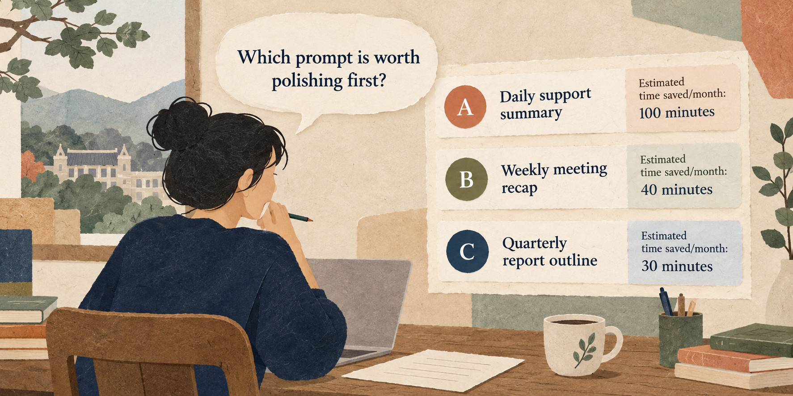

Situation
The problem
A student has several prompts but limited time to polish and present them. Choosing by novelty alone can overlook a simple prompt that solves a frequent task.

3 hours: 50-minute lesson, 10-minute break, 50-minute guided practice, 10-minute break, 50-minute applied practice, and 10-minute wrap-up.
A student has several prompts but limited time to polish and present them. Choosing by novelty alone can overlook a simple prompt that solves a frequent task.
Compare candidate prompts using practical value, reuse, output quality, and a modest time-saved estimate.
Practice material: Use the practice material supplied in the session Markdown.
Do not replace missing information with guesses.
A student has several prompts but limited time to polish and present them. Choosing by novelty alone can overlook a simple prompt that solves a frequent task.
Keep each concept tied to the practical decision.
These examples come from the current session scenario.
Which prompt is the coolest?
Pick the highest-scoring one and say it will save money.
Keep the source, task, constraints, and output check visible.
For each candidate, calculate estimated minutes saved per month from the figures below. Show the multiplication and label results as estimates.
Compare the three prompts on usefulness, repeat frequency, consistency, ease of reuse, and error risk (low/medium/high). Recommend one to polish first and state one reason not to choose each alternative. Do not claim measured savings.
Use the complete case and instructions from the session Markdown.
Use the complete case and instructions from the session Markdown.
Check the output before sharing or acting on it.